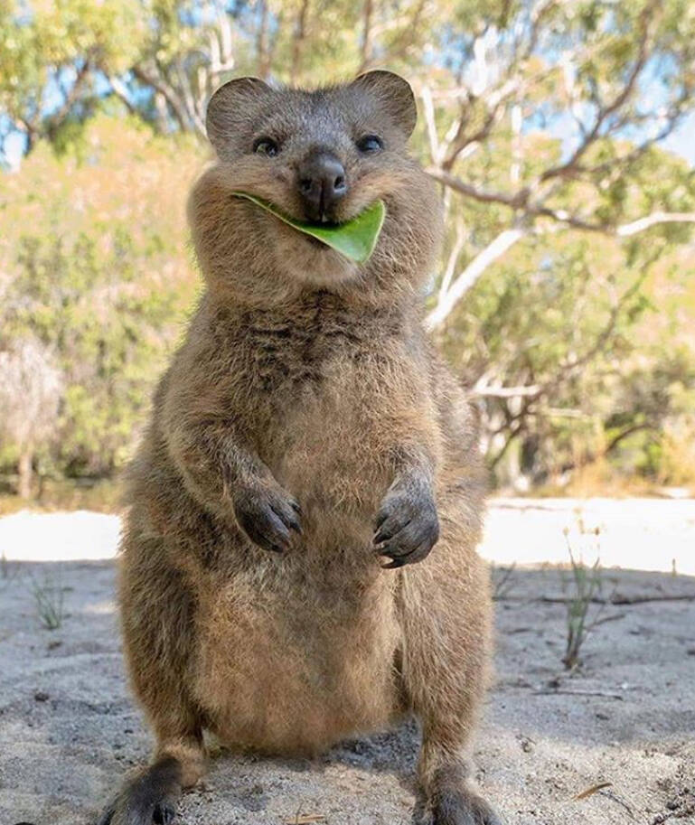
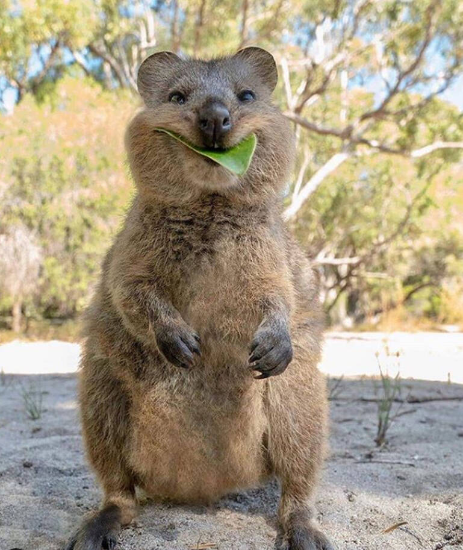

The quokka (/ˈkwɒkə/) (Setonix brachyurus) is a small macropod about the size of a domestic cat. It is the only member of the genus Setonix. Like other marsupials in the macropod family (such as kangaroos and wallabies), the quokka is herbivorous and mainly nocturnal.
Quokkas are found on some smaller islands off the coast of Western Australia, particularly Rottnest Island just off Perth and Bald Island near Albany. Isolated, scattered populations also exist in forest and coastal heath between Perth and Albany. A small colony inhabits a protected area of Two Peoples Bay Nature Reserve, where they co-exist with the critically endangered Gilbert's potoroo.
 
